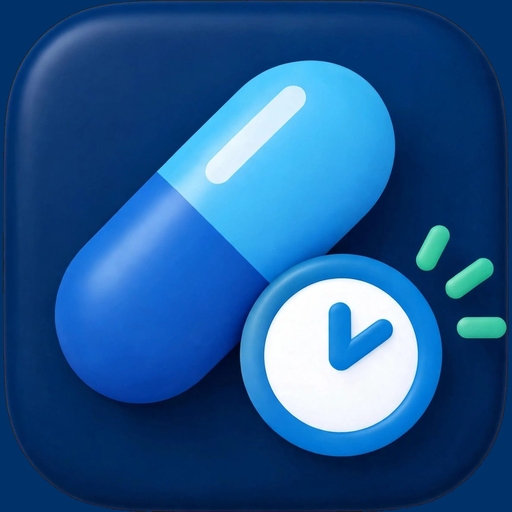

Next-RxNext-Rx Privacy Policy
Effective 7 September 2026 Next-Rx reminds you when a medication dose is due. This policy describes what the app collects, where it goes, and what it never does.
The short version
Your medication data never leaves your phone. The only thing Next-Rx sends anywhere is your email address, and only so you can sign in.
What is stored on your device
The following is kept in a database on your phone and is **never transmitted to us or to anyone else**:
- Medication names and dosage notes you enter
- How often each medication is taken, and when you last took it
- Your history of doses marked as taken or skipped
- Your scheduled reminders
This information is health-related, which is why it stays on the device. It is removed when you uninstall the app. We cannot read it, recover it, or restore it if the phone is lost — there is currently no cloud backup.
What leaves your device
Your email address. Next-Rx has no passwords. You enter an email address and we send a one-time sign-in link. To do that, your address is handled by:
- Supabase — creates your account, issues the sign-in link, and keeps the
- Resend — delivers the sign-in email. resend.com/legal/privacy-policy
session that stays signed in. supabase.com/privacy
Both act as processors on our behalf. Your email address is used to identify your account and to send sign-in links. It is not used for marketing, and it is not sold, rented, or shared with anyone else. Your sign-in session is stored in your device's secure storage — the Android Keystore or the iOS Keychain.
What Next-Rx does not do
- No advertising, and no advertising identifiers
- No analytics or usage tracking
- No location, contacts, camera, microphone, or photo access
- No selling or sharing of personal information
- No profiling or automated decision-making
Notifications
Reminders are scheduled with your device's own operating system and are delivered by it, not by a server. They work with no network connection, and the content of a reminder never leaves the phone. To deliver reminders on time the app asks for permission to post notifications, to schedule exact alarms, to re-arm reminders after a restart, and — optionally — to be exempt from battery optimisation. You can decline or revoke any of these in system settings, though reminders may be delayed or stop arriving.
Your choices
- Stop reminders: remove a medication in the app, or revoke notification
- Delete your medication data: uninstall the app. It is on your device only.
- Delete your account: email the address below and we will remove your
- Access a copy of your data: the only personal data we hold is your email
permission in system settings.
account and email address from our authentication provider.
address; write to us and we will confirm what is stored.
Children
Next-Rx is not directed at children under 13, and we do not knowingly collect personal information from them.
Changes
If this policy changes, the effective date above changes with it, and a notice appears in the app if the change is material.
Contact
Questions, deletion requests, or anything else: privacy@next-rx.com